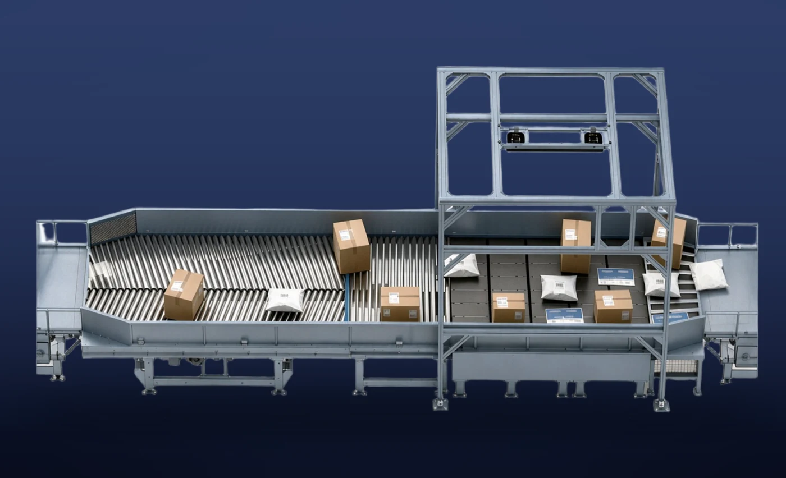

产品特点
后续设备供件
为DWS、条码读取器和分拣机整理供件状态。
规格与选型条件
| 分离能力 | 10,000 件/小时 |
|---|---|
| 最大输送速度 | 2.5 m/s |
| 噪声水平 | 不超过72 dB |
数值依据自有工厂2026年10月版产品资料。实际能力会因货物尺寸与重量、供包条件、格口数量及产线配置而变化。
导入前需确认的事项
请告知货物最小及最大尺寸与重量、所需处理量、格口数量、安装空间、电源、温度范围及既有设备接驳条件；维护范围和安装工序也将逐项确认。
咨询规格与报价
为DWS、条码读取器和分拣机整理供件状态。
| 分离能力 | 10,000 件/小时 |
|---|---|
| 最大输送速度 | 2.5 m/s |
| 噪声水平 | 不超过72 dB |
数值依据自有工厂2026年10月版产品资料。实际能力会因货物尺寸与重量、供包条件、格口数量及产线配置而变化。
请告知货物最小及最大尺寸与重量、所需处理量、格口数量、安装空间、电源、温度范围及既有设备接驳条件；维护范围和安装工序也将逐项确认。
咨询规格与报价